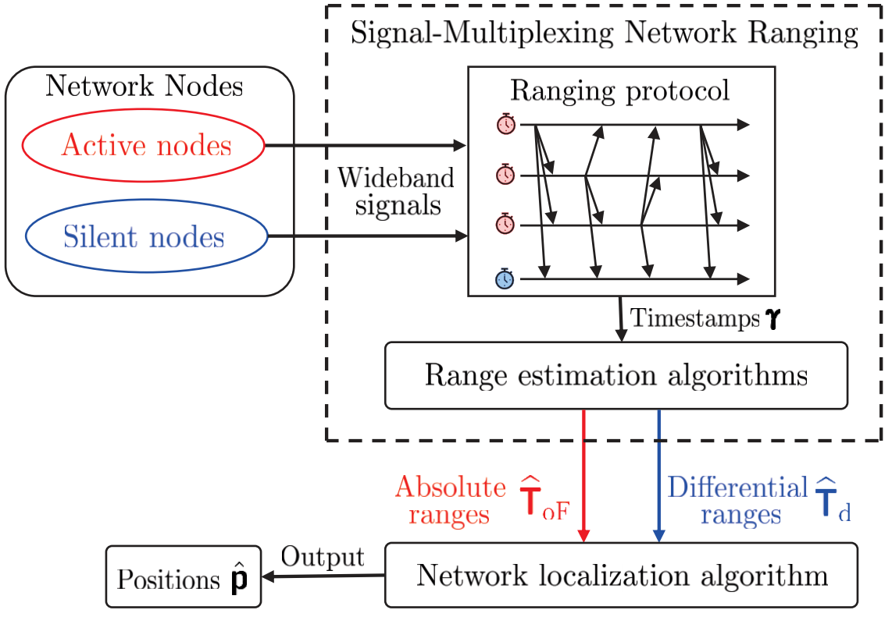

Projects
Research in wireless communications and signal processing, organized by topic. The summaries describe the methods and findings of selected journal papers.
Dense-Array Channel Estimation

Observation design: from ice filling to 2D ice filling
Spatial correlation in dense arrays can guide the design of informative pilot observations. This work develops ice filling as a discrete counterpart of water filling and extends it to joint transmit-precoder and receive-combiner design through two-dimensional ice filling and a hybrid-array variant. For RIS-aided links, alternating Riemannian optimization jointly designs receive combiners and RIS phase shifts, while received pilots support adaptive covariance learning. The papers report analytical or simulation evidence of improved estimation accuracy under limited pilot resources.
Selected publications
Observation Matrix Design for Densifying MIMO Channel Estimation via 2D Ice Filling IEEE Transactions on Signal Processing, vol. 74, pp. 798–814, 2026.
Ice-Filling: Near-Optimal Channel Estimation for Dense Array Systems IEEE Transactions on Wireless Communications, vol. 24, no. 10, pp. 8551–8564, Oct. 2025.
Enhancing Channel Estimation in RIS-aided Systems via Observation Matrix Design IEEE Transactions on Vehicular Technology, Early Access, 2026.
Fluid Antenna Systems

Successive Bayesian reconstruction of spatially continuous channels
Fluid antenna systems require channel information across candidate antenna positions, but measuring every position is costly. The successive Bayesian reconstructor (S-BAR) models the spatial channel as a stochastic process and uses an experiential kernel to select measurements and reconstruct unobserved channels. Simulations with matched and mismatched channel models show the benefits of reconstruction aided by prior information, without assuming angular sparsity or slow channel variation.
Near-Field XL-MIMO

Low-overhead beam training: hierarchical search and Bayesian inference
Near-field beams depend on both angle and distance, making exhaustive codebook searches costly. A hierarchical method designs multiresolution codebooks using the Gerchberg–Saxton algorithm and adapts them to hybrid arrays without additional time-delay hardware. A subsequent Bayesian regression method uses correlations between codewords to update a Gaussian process posterior and infer promising beams from a small set of measurements. Simulations evaluate the tradeoff between training overhead and achievable rate.
Selected publications
Near-Optimal Near-Field Beam Training: From Searching to Inference IEEE Transactions on Wireless Communications, vol. 24, no. 11, pp. 9173–9185, Nov. 2025.
Hierarchical Beam Training for Extremely Large-Scale MIMO: From Far-Field to Near-Field IEEE Transactions on Communications, vol. 72, no. 4, pp. 2247–2259, Apr. 2024.
Holographic and Continuous-Aperture MIMO

Pattern-division multiplexing for continuous-aperture MIMO
Continuous-aperture MIMO requires current patterns to be designed over an aperture. Pattern-division multiplexing (PDM) represents these continuous functions by projecting them onto finite orthogonal bases, reducing a functional optimization problem to a tractable finite-dimensional one. Block coordinate descent optimizes the patterns for multiuser sum rate. Simulations show gains over the evaluated baselines.

Electromagnetic information theory and wavenumber-domain processing
Spatially continuous apertures require models of electromagnetic fields and subwavelength correlation. A random-field formulation analyzes mutual information between continuous source and destination regions under white and colored noise. A subsequent overview uses a spatial Fourier plane-wave decomposition to describe holographic MIMO in the wavenumber domain. It relates this channel representation to multiplexing, channel estimation, and waveform design, and discusses open questions in wideband and network-level operation.
Selected publications
Pattern-Division Multiplexing for Multi-User Continuous-Aperture MIMO IEEE Journal on Selected Areas in Communications, vol. 41, no. 8, pp. 2350–2366, Aug. 2023.
Wavenumber-Domain Signal Processing for Holographic MIMO: Foundations, Methods, and Future Directions IEEE Communications Standards Magazine, vol. 10, no. 2, pp. 127–133, Jun. 2026.
Mutual Information for Electromagnetic Information Theory Based on Random Fields IEEE Transactions on Communications, vol. 71, no. 4, pp. 1982–1996, Apr. 2023.
Reconfigurable Intelligent Surfaces

RIS-aided cell-free networks and multi-hop transmissions
RIS-aided cell-free networks combine distributed base stations with low-cost reflecting surfaces to improve network capacity. The wideband framework jointly optimizes base-station precoders and RIS configurations using fractional programming and alternating optimization. Related studies address fairness in energy efficiency and extend channel modeling and beamforming design to multihop RIS reflections. Simulations evaluate the contribution of these reflected paths.

Active RIS: signal modeling, architectures, and wideband beamforming
Multiplicative fading limits passive RIS links, especially in the presence of a strong direct link. The active RIS study introduces signal amplification, validates an amplification-and-noise model using a fabricated element, and develops joint transmit and reflection beamforming. Related work examines the energy efficiency of subconnected architectures with shared amplifiers and grouped-subcarrier designs for wideband channels. An overview discusses RIS fundamentals, common misconceptions, and the limits imposed by fading.

Compact user-specific RIS for uplink transmission
Large antenna arrays at user devices face size, cost, and power constraints. This work proposes a compact multilayer user-specific RIS that supports phase control and partial amplitude control of the transmitted signal. Alternating optimization of the beamforming design maximizes the uplink signal-to-noise ratio. Simulations assess the architecture as a compact implementation of a large user-side array.
Selected publications
A Joint Precoding Framework for Wideband Reconfigurable Intelligent Surface-Aided Cell-Free Network IEEE Transactions on Signal Processing, vol. 69, pp. 4085–4101, 2021.
Active RIS vs. Passive RIS: Which Will Prevail in 6G? IEEE Transactions on Communications, vol. 71, no. 3, pp. 1707–1725, Mar. 2023.
Compact User-Specific Reconfigurable Intelligent Surfaces for Uplink Transmission IEEE Transactions on Communications, vol. 70, no. 1, pp. 680–692, Jan. 2022.
Localization, Sensing, and Radio Maps

Signal-multiplexing ranging and asynchronous vehicle localization
Accurate network ranging must account for clock drift while limiting exchanges between node pairs. Signal-multiplexing network ranging reuses transmissions and timestamp relationships to mitigate clock errors with minimal signaling overhead. Extensions use reflected non-line-of-sight signals for joint localization and sensing, and introduce a network-measuring protocol for relative localization among asynchronous moving vehicles. The studies evaluate ranging accuracy, positioning robustness, and measurement timeliness.

Urban 3D radio-map reconstruction from sparse UAV measurements
Three-dimensional urban radio maps support UAV communications, but dense measurement campaigns are costly. This work collects an urban dataset using a UAV and develops a Gaussian process regression framework to reconstruct radio maps from sparse observations. Offline clustering and online point selection based on posterior estimates identify informative measurements. Experiments evaluate the framework using the collected data.
Selected publications
Signal-Multiplexing Ranging for Network Localization IEEE Transactions on Wireless Communications, vol. 21, no. 3, pp. 1694–1709, Mar. 2022.
Enhancing Timeliness in Asynchronous Vehicle Localization: A Signal-Multiplexing Network Measuring Approach IEEE Transactions on Intelligent Transportation Systems, vol. 25, no. 10, pp. 13729–13743, Oct. 2024.
High-Efficiency Urban 3D Radio Map Estimation Based on Sparse Measurements IEEE Transactions on Vehicular Technology, vol. 74, no. 10, pp. 16488–16493, Oct. 2025.
Rydberg Atomic Receivers

Atomic reception for wireless communication and sensing
Rydberg atomic receivers detect radio signals through atomic transitions. This collaborative article reviews their operating principles and recent developments, and reports OFDM reception and image-transmission experiments using quantized deep joint source-channel coding. It discusses practical limitations and potential applications in multiband communication, sensing, and energy-efficient wireless systems.